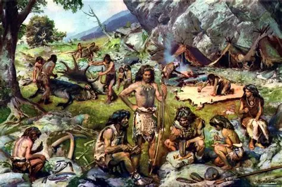

O Paleolítico (também conhecido como a Idade da Pedra Lascada) é o período mais longo e fascinante da história da humanidade. Ele começa com os primeiros ancestrais fabricando ferramentas de pedra e vai até o surgimento da agricultura.
Para dominar esse assunto em provas como o ENEM, imagine a vida humana dividida em grandes conquistas diárias pela sobrevivência:
Prof. Marcelo Oliveira — História Geral.
Questão 1 (Enem - Adaptada)
Antes do domínio da agricultura e da domesticação de animais, os seres
humanos dependiam diretamente dos recursos oferecidos pela natureza para
garantir sua sobrevivência diária. Nesse contexto, caracterizado pelo
período Paleolítico, o modo de vida humano era marcado por:
A) A fixação de povoados agrícolas permanentes próximos a grandes rios,
garantindo a irrigação das plantações.
B) A prática do nomadismo associada à dependência das atividades de
caça, pesca e coleta de frutos silvestres.
C) A divisão social complexa do trabalho, com o surgimento do comércio
de excedentes agrícolas entre diferentes tribos.
D) O desenvolvimento da metalurgia do bronze e do ferro para a
fabricação de armas de guerra sofisticadas.
E) A construção de monumentos megalíticos de pedra para a realização de
rituais religiosos agrários.
Questão 2 (Enem - Adaptada)
"O domínio do fogo representou uma das maiores conquistas
tecnológicas da pré-história humana. Mais do que afastar o frio e os
predadores, ele mudou a relação do homem com o seu próprio alimento e
com o espaço ao seu redor."
Considerando a importância do fogo no cotidiano das comunidades do
Paleolítico, essa conquista tecnológica contribuiu diretamente para:
A) A invenção da escrita cuneiforme para o registro de rotas de
migração.
B) A criação de grandes impérios centralizados baseados na cobrança de
impostos.
C) A melhoria na absorção de nutrientes através da cocção dos alimentos
e maior segurança contra predadores noturnos.
D) O surgimento das primeiras cidades muradas com planejamento urbano
avançado.
E) A substituição completa das ferramentas de pedra por artefatos de
metal fundido.